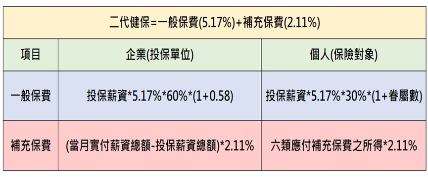
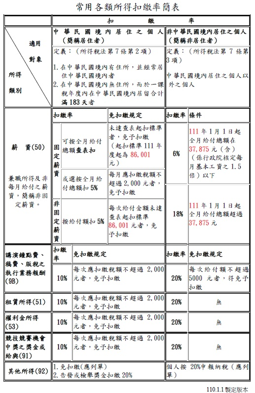

相關資訊
公司經營必看
1.「勞工職業災害保險及保護法」5月1日施行，老闆們了解災保法的重點嗎？
「勞工職業災害保險及保護法」（以下簡稱災保法）於今年五一勞動節上路，除擴大加保對象，凡受雇登記有案的事業單位，不論員工數，勞工到職日即強制納保，也提升職災給付條件。另將成立「財團法人職災預防及重建中心」連結、統籌與轉介資源，並放寬職能復健服務的開案標準、補助上限，幫助職災勞工重返職場。
未依規定處理「勞工職業災害保險及保護法」有什麼罰則？
雇主未依規定投保或違反災保法相關法令，視情況依相關罰則裁罰新台幣2萬至150萬元之罰鍰。而且需配合主管機關限期改善，屆期未改善者，會按次處罰哦！所以雇主們在經營事業的路上，千萬要小心，不要因為不了解法令而觸法喔！
2.每年3月應申報公司法第22條之1-公司負責人及主要股東資訊！
為什麼要申報這個資訊？
為了因應洗錢防制法，公司應揭露實質受益人而做的申報。所以經濟部自107年11月1日施行公司法第22條之1規定之公司申報制度。
應在何時做這項申報？
依據「公司法第22條之1資料申報及管理辦法」的規定，公司新成立的15天內應完成「首次（設立）申報」，如有變更登記也應在變動後變動後15天內完成「變動申報」。如在上一年度內非新成立，也無變更登記的公司則應在每年3月1日至3月31日應完成「年度申報」。
未申報會有罰則嗎？
是的，會受罰。未依第一項規定申報或申報之資料不實，經中央主管機關限期通知改正，屆期未改正者，處代表公司之董事新臺幣五萬元以上五十萬元以下罰鍰。經再限期通知改正仍未改正者，按次處新臺幣五十萬元以上五百萬元以下罰鍰，至改正為止。其情節重大者，得廢止公司登記。
3.企業主們準備好創業了，但是基本的勞健保事宜有弄懂了嗎？
小企業是不是不用成立投保單位？
依勞工保險條例規定：
員工人數滿1人以上，需幫員工投保就業保險、提撥勞退金及健保。
員工人數滿5人(含)以上，需幫15～65歲員工投保勞保及上述就業保險、提撥勞退金及健保，不論全職員工或是計時的兼職人員都包含。
何時應該幫員工加保？
員工就職的第一天就需要幫其投保，且不論是正職或兼職人員均需投保。沒依規定投保被查到，雇主會被裁罰，且若是員工在已到職但未投保的情況下，有任何災害發生很可能雇主要自行承擔責任風險，故按時依法為員工投保是很重要的事，不只是保障員工，也是降低雇主的風險喔！
勞工退保金一定要提撥嗎？怎麼計算提撥金額？
依法令規定，一定要提撥。否則雇主會受罰。雇主應該為適用勞基法之勞工（含本國籍、外籍配偶、陸港澳地區配偶、永久居留之外籍人士），按月提繳不低於其每月工資總和之6％做為勞工退休金。申報金額按「勞工退休金月提繳工資分級表」的等級申報。例如員工實領30,000元，投保30,300級距，每月勞退金算法為30,300*6%=1818元。
創業必看
1.創業要懂的事-什麼是二代健保？
二代健保於102年1月1日實施，為了改善健保財務虧損的問題。二代健保分成兩種費率：『一般保險費』和『補充保險費』。 一般保險費就是原有的健保費制度，以經常性薪資所得為主，健保署會主動開立帳單給企業繳款。二代健保補充險費是健保署要求企業在發放企業投保的員工薪資之外，還有給付補充保費規範的六類個人所得時，要在支付時先做『二代健保補充保費』扣費及代繳，也就是向『實付薪資大於投保薪資差額的企業(投保單位)』和『六類應付補充保費所得的人員(領所得之保險對象)』進行課徵。
費率為何？
現行的『一般健保費率』為5.17%。『補充保費』費率為2.11%(110年1月1日起調漲)，因此公司若有額外給付固定薪資以外的金額時，必須由公司計算補充保費金額，自行列單繳款。

2.創業後的稅務簡介-哪些進項憑證的稅額能夠扣抵營業稅？
之前我們已經淺談過營業稅了，我國營業稅屬消費稅，需要代消費者將銷售時收取的營業稅，減除能扣抵的進項稅額後，再將差額繳納給政府，現在我們再來談談哪些進項憑證的稅額可以扣抵營業稅。
進項憑證是什麼？
是企業買入原物料、商品，與企業營運相關的各項設備、支出，所取得的各種發票、收據、載有稅額單據及支出證明單據等各種合法憑證。
所有進項憑證都有營業稅額嗎？
進項憑證簡易分類，有打企業統編的應稅發票、載有稅額的單據如高鐵車票、進口稅單等，是有營業稅額，能夠扣抵營業稅的。若是免用統一發票小規模營業人的收據、勞報單、計程車資單據、郵局的購買票品證明單等，是沒有營業稅的進項憑證，無法扣抵營業稅喔！
哪些項目的進項發票稅額可以扣抵？
依會計項目大致分類如下：
進料進貨：購入貨品、原物料或製造產品相關的各項費用。
租金支出：租用營業場所或辦公設備之費用。
文具用品：購買營運所需紙張、各式文具、筆、文件夾等支出。
出差旅費：差旅報告書應列示行程證明與業務相關。住宿費、交通費可扣抵。
運 費：運送貨品之相關運費。
郵電費：通訊、電話費用。
修繕費：企業營運相關資產的修繕費用、裝修費等。
廣告費：與業務相關之各項商品行銷、招募員工之廣告費用。
水電瓦斯費：企業所屬地點 (包含辦公室、門市、倉庫等) 的水電瓦斯費用。
訓練費：培訓員工、或依法指派員工參加業務相關之訓練費用。
交通費：業務所需的車輛油資、電動車電池月租費、停車費、車資等。
其他費用：與營運有關鎖碎開銷，例如清潔用品、五金配件、什費等。
固定資產：房屋、機械設備、電器用品、電腦設備、運輸設備 (貨車) 等。
哪些發票的進項稅額不能扣抵？
交際餐飲支出、禮品、小客車、非營業所需的個人用品等發票。
3.創業後的稅務簡介-盈餘分配
之前我們講解過營利事業所得稅了，企業經營者在年度結算後，公司組織如果有盈餘，需要繳納營所稅，行號則不用繳營所稅，然後呢？企業家能怎麼使用這些盈餘數字呢？我們這次就來談談『盈餘分配』。
公司組織的年度盈餘若要分配應如何計算及申報？
公司組織的企業在設立時，需要訂定章程，依據章程規定來分配盈餘，通常公司組織的企業，在年度結算後如果有盈餘，應該先提繳稅款、然後再彌補之前年度的累積虧損，減除前兩項之數字後，需要提撥該數字10%為法定盈餘公積，(但法定盈餘公積已達資本總額時，不在此限，可以不再提列)。最後再看章程訂定的股息比率分配給股東，如果還有盈餘額度，再由有限公司的股東同意或是股份有限公司的股東會決議分派股東紅利。
盈餘如果不想分配，可以嗎？
當然可以，有些企業有其他計劃，或是為了高資產的股東節稅規劃，可以選擇不分配或是部份分配，而不分配的數字需要在次年營所稅申報時，再加計未分配盈餘加徵5%稅額，繳交稅金即可。
行號組織的盈餘怎麼分配？
獨資行號的負責人在結算時直接將盈餘數字併入該年度的個人綜所營利所得中申報即可，若是合夥組織的行號就依合夥比例拆分盈餘數字直接計入各合夥人的個人綜所申報。行號不需像公司組織透過股利申報開立扣繳憑單來處理。
稅務資訊
1.創業後的稅務簡介-暫繳申報
暫繳是什麼？
之前已介紹過營利事務所得稅了，我們再來聊聊『暫繳申報』，這項稅務相關的措施，與營利事業所得稅相關，簡言之，就是政府考量大多數企業一年一度要支付營所稅時，可能都是一筆很大的金額，所以，讓企業提早先預付一點稅額，在隔年五月結算申報期間繳納營所稅時可多退少補。
暫繳應在何時繳納申報？
一般曆年制的企業，繳納的時間是在結算後第四個月，即每年的九月份。若非曆年制則視企業的特殊稅務年度結束後第五個月為結算申報期間，再過四個月，即稅務年度結束後第九個月為暫繳繳款申報期間。
暫繳稅款如何計算？
稅額計算依據非常簡單，上年度的營利事業所得稅金額的一半，就是今年暫繳的應納稅額，舉例來說，如110年的營所稅稅金為28萬元，111年的9月，就應支付111年度的營所稅暫繳稅款14萬元 (28萬*0.5 = 14萬) 給國稅局，待明年112年的5月結算111年度營所稅，若該企業小幅成長111年應納稅額為30萬元，則30萬 – 暫繳14萬 = 112年5月應納營所稅為16萬元。反之，若該企業營運不佳111年應納稅額僅為10萬，則10萬 – 暫繳14萬 = 應退稅額4萬。
暫繳除了繳稅金之外，在什麼情況下需申報？
目前的暫繳程序很便利，大多數企業只需要繳付稅金即可，不需額外申報。若企業該年度營運較上年度明顯驟減，不想依上年度數據繳付較高的暫繳稅款，雖然未來可退稅，但退稅需要再等待一段時間之後，對企業的資金調度實屬不便，這種情況之下，可在帳證資料齊全並經會計師查核簽證，且如期辦理暫繳申報，以該年度上半年的收入總額，核實計算該年度應暫繳的稅額。
2.創業後的稅務簡介-各類所得扣繳申報
企業支付成本費用給法人廠商，可拿取發票或免用發票的收據做為支出的依據，讓國稅局可勾稽；但支付給自然人或是執行業務的專技人士事務所等單位，該怎麼辦呢？為了雙向可勾稽的稅制措施，這類的支出就要以各類所得扣繳申報來處理，讓宜泓事務所來簡單向您介紹。
為什麼這項稅務措施名稱為各類『所得‧扣‧繳』？
- 薪資所得(50)：分為每月固定經常性給付之工資(經常性工資之定義)。及非固定薪資所得(50)：正職員工之非經常性給付之三節、補助、考績獎金等，非正職投保之臨時工資、勞務報酬費等。
- 執行業務(9A): 給付具專門職業資格人之自付盈虧勞務報酬，例: 建築師、律師、代書、專利代理人、會計師、土木技師、表演人、書畫家等等。
- 執行業務(9B): 給付有出版之稿費等、非僱傭關係之翻譯費、非上課性質之公開講演費等。
- 租賃所得(51): 給付房租予個人房東時。
- 權利金(53): 專利權、商標權、著作權、秘密方法及各種特許權利，供他人使用而取得之權利金所得。
- 機會與競賽獎金(91): 各項競技、競賽及機會中獎之獎金或給與。
- 退職所得(93): 退休金、資遣費、退職金、離職金、終身俸及非屬保險給付之養老金、退休人員之子女教育補助費及年終慰問金。
- 股利所得(54C): 投資獲配盈餘之所得。
- 利息所得(5B): 出借款項所獲取之對價所得。
- 其它所得(92): 表演團體所取得之表演費等，與不屬於上述其它類別的給付。
扣繳率有點複雜應如何查詢？
請參考下表：

3.創業後的稅務簡介-營所稅
營所稅是『營利事業所得稅』的簡稱，是每年5月申報上年度企業總體收益的稅，與按月或按期申報的營業稅不同，也不能用營業稅已付的稅金來抵減營所稅。就讓宜泓事務所來為您簡單解說年度的營所稅吧！
什麼是營所稅？
營所稅簡單來說，就是一個企業的年度所得稅，類似個人的綜合所得稅之意，每個企業均需在一個年度結束後的第五個月申報及繳納上年度的所得稅，可概分為兩大方向，『書審申報』及『查帳申報』。
『書審申報』：適合年營業額3000萬以下，會計憑證資料較不齊全的企業。
『查帳申報』：適合會計憑證齊全經得起查核且稅前淨利較書審率更為節稅的企業。
營所稅如何計算？
採『書審申報』的計算方式：財政部針對各行各業均明訂『書審率』規範該行業的『課稅所得』比例數字，舉例來說A企業所屬的行業別書審率為6%，上年度A企業營業收入金額為2000萬元，不論該企業的成本及費用數字為何，營所稅的計算僅以2000萬*6%=120萬元為課稅所得，以120萬的20%，支付24萬的營所稅。
採『查帳申報』的計算方式：如A企業的成本費用均有合法的支出憑證，合計達1920萬元，收入2000萬減1920萬成本費用，課稅所得即為80萬，以80萬的20%，支付16萬元的營所稅。
商號與公司組織的營所稅有何不同？
以現行的稅法規定，商號不需繳納營所稅，僅需計算至課稅所得數字，併入該商號的獨資企業主，或依資本額比例分配給合夥人，於該年度的個人綜合所得稅中列報營利所得即可。
公司組織才需繳納營所稅，並在次年度分配盈餘申報股利憑單，計入該企業的股東個人綜所之中。